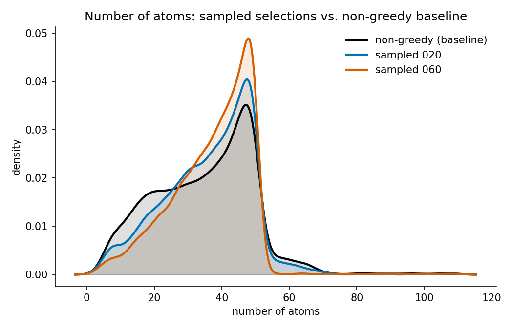
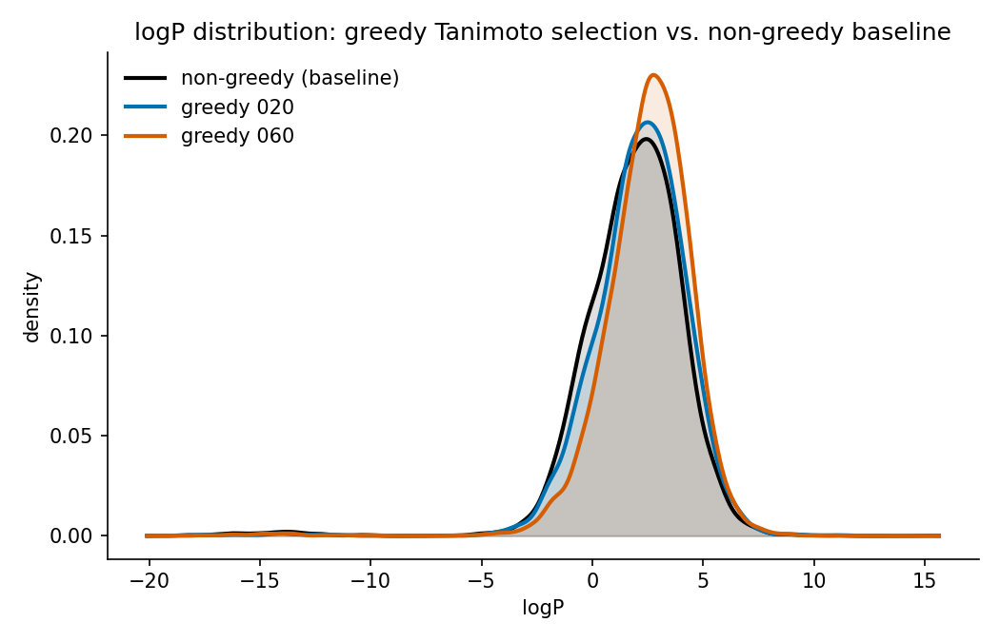
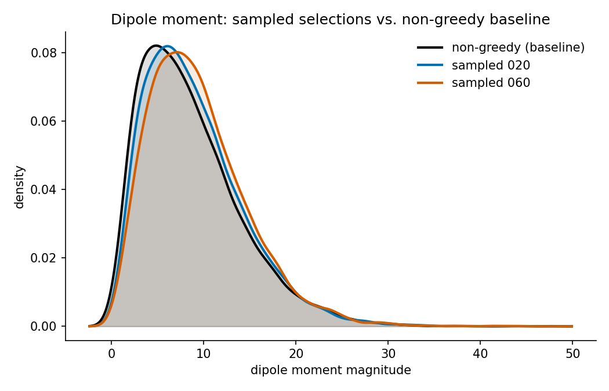
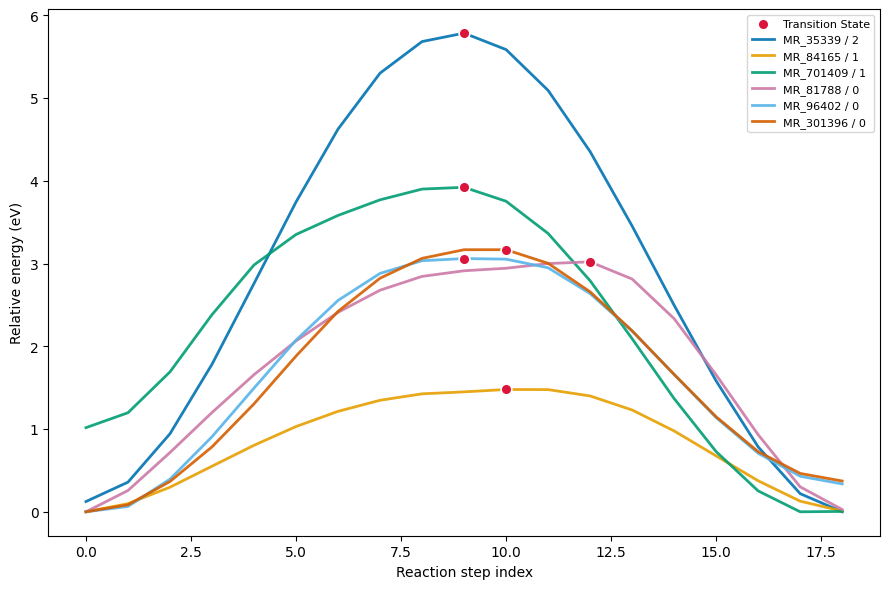

Advanced Tutorials¶
Moving beyond standard CLI usage, this guide walks you through more advanced, hands-on examples. You will learn how to:
Execute queries directly through Python objects
Construct leak-free train/validation/test splits for your curated datasets
Perform post-export dataset audits
Curate and refine chemistry data
These examples build upon the CLI command references, configuration reference, and query examples.
Note
These examples illustrate the workflow — adapt the thresholds and methods to your own data and scientific requirements.
Prerequisite: This guide assumes you have already created a processed
query database (Parquet files) during the process step.
Querying and Filtering Data¶
Begin by filtering entries based on specific molecular properties, using the
db_query object created above. The API accepts SQL-like syntax, allowing
you to filter across any schema field seamlessly.
query = "net_force_norm < 1.0e-3 AND "
query += "max_force_norm < 15 AND "
query += "is_molecular_structure_valid"
keys = db_query.query_to_keys(query)
This is what you would see, for instance, if your query database has OMOL25 processed into it:
🔍 Query: net_force_norm < 1.0e-3 AND max_force_norm < 15 AND is_molecular_structure_valid
✅ Found 103,699,333 molecules matching the criteria
To extract a subsample of the query results, simply pass the sampling keyword arguments:
keys_sampled = db_query.query_to_keys(
query, sampling_method="random", n_samples=1000
)
Matching keys feed directly into three built-in analysis actions, each
operating on the same db_query object and the same array of entry keys:
make_histograms plots a histogram for one or more columns, make_statistics
writes summary statistics (count, mean, min, max, …) to a CSV file, and
extract_smiles extracts the SMILES strings of the matched entries into a
.npy file. All three are importable from
chemreporter.query_database_tools.actions_tools. The example below plots a
histogram of max_force_norm:
from pathlib import Path
from chemreporter.query_database_tools.actions_tools import make_histograms
make_histograms(
db_handler=db_query,
entry_keys=keys_sampled,
output_path=Path("/path/to/output_dir"),
column_names=["max_force_norm"],
)
Save these keys to a file (e.g., filtered_keys.npy), and you have exactly
what the HDF5 export step requires.
To explore available query fields, you can inspect FULL_SCHEMA. It
provides comprehensive documentation, including field names and
descriptions, eliminating any guesswork:
from chemreporter.query_database_tools.table_schemas import FULL_SCHEMA
for field in FULL_SCHEMA:
print(f"{field.name}: {field.description}")
If the built-in actions aren’t enough, db_query.get_dataframe(indices=keys, columns=[...]) gives you the raw Polars DataFrame for the matched keys, so
you can filter, join, or transform it however your analysis requires. The
next sections rely on this, too.
Constructing Leak-Free Data Splits¶
To avoid data leakage, split by molecular identity, not by row: if the same
molecule (identified by its canonical smiles) ends up in both your training
and test sets — even as a different conformation or with a different
label — your test metrics stop measuring generalization to unseen chemistry.
Splitting on unique smiles values, rather than randomly across all rows,
keeps every occurrence of a given molecule on the same side of the split.
Reactive datasets add another axis of leakage on top of this: structures
along the same reaction pathway (e.g. reactant, transition state, product)
share the same underlying reaction, so splitting them across training and
test still leaks information about that reaction. For these datasets,
partition by unique reaction_id instead of smiles — the example below
does exactly that for the RGD subset of OMOL25, and generalizes directly to
a plain molecule split if you swap reaction_id for smiles throughout.
One effective, leakage-free approach is to fetch the reaction_id for the
entry keys returned by your query (see
Querying and Filtering Data), collect the
unique reaction IDs, shuffle them, and slice the shuffled list by your
desired fractions:
df = db_query.get_dataframe(indices=keys, columns=["entry_key", "reaction_id"])
unique_reaction_ids = df.select("reaction_id").unique().collect()
# Shuffle the reaction_ids to ensure randomization
unique_reaction_ids = unique_reaction_ids.sample(fraction=1.0, shuffle=True, seed=42)
n = unique_reaction_ids.height
# Allocate 90% of the unique reactions to the training set
n_train = int(0.90 * n)
training_reaction_ids = unique_reaction_ids.slice(0, n_train)
validation_reaction_ids = unique_reaction_ids.slice(n_train)
train_keys = (
df.join(training_reaction_ids.lazy(), on="reaction_id", how="inner")
.select("entry_key")
.collect()
.sample(n=20000, seed=42)
.get_column("entry_key")
.to_numpy()
)
validation_keys = (
df.join(validation_reaction_ids.lazy(), on="reaction_id", how="inner")
.select("entry_key")
.collect()
.sample(n=2000, seed=42)
.get_column("entry_key")
.to_numpy()
)
Running this over the RGD subset of OMOL25 (3,359,478 entries spanning 140,672 unique reaction IDs) yields clean, isolated datasets:
There are 66115 training reaction ids
We have 20000 samples in the training split covering 16971 unique reaction ids
We have 2000 samples in the training split covering 1452 unique reaction ids
You can then save each split’s train_keys / validation_keys array of
entry keys as a NumPy file, which is exactly what chemreporter export
needs to finalize the datasets.
Restricting Queries with Allowlists¶
When your target molecules are predetermined — such as a held-out training
set, or a previously defined split like training_reaction_ids above — you
can apply an allowlist directly within the query. The restrict_to
parameter performs an efficient semi-join, eliminating the need for
post-query filtering:
keys = db_query.query_to_keys(
query,
n_samples=100000,
restrict_to={"columns": ["reaction_id"], "values": training_reaction_ids},
)
The columns argument can accept multiple fields. In such cases, a row must
match on all specified fields, allowing you to enforce composite identities
like ["reaction_id", "reaction_pathway_id"].
If you are using a YAML config file instead of the Python API, the allowlist
is provided as path_to_values, pointing to a file instead of a DataFrame:
a .npy file for a single column’s values, or a .npz file containing one
named array per column:
restrict_to:
columns: reaction_id
path_to_values: path/to/allowlist.npy
Dataset Analysis¶
Exported key files don’t store the metadata themselves — they are exact
pointers back into your query database. You can load a saved key array back
in at any time and use db_query.get_dataframe (introduced in
Querying and Filtering Data) to pull any
schema field into a DataFrame for further analysis, which is particularly
useful for comparing the property distributions of different sampling
strategies, for example a random baseline against the diversity-based
sampling strategies from Sampling:
import numpy as np
baseline_keys = np.load("path/to/non_greedy_keys.npy", allow_pickle=True)
sampled_keys_a = np.load("path/to/sampled_selection_a.npy", allow_pickle=True)
sampled_keys_b = np.load("path/to/sampled_selection_b.npy", allow_pickle=True)
columns = ["num_atoms", "logp", "dipole_moment_magnitude"]
df_baseline = db_query.get_dataframe(indices=baseline_keys, columns=columns).collect()
df_sampled_a = db_query.get_dataframe(indices=sampled_keys_a, columns=columns).collect()
df_sampled_b = db_query.get_dataframe(indices=sampled_keys_b, columns=columns).collect()
The plots below compare the resulting property distributions of the two
sampled selections against the random (non_greedy) baseline:



Note
If the original key file is lost, you can extract the keys directly from the exported HDF5 file itself — its top-level groups are the entry keys.
Curating a Dataset: Reactive Chemistry (Transition States)¶
Using reaction-pathway data (such as the rgd subset of OMOL25), you can
programmatically derive transition-state labels from energy profiles, filter
out unphysical pathways, and construct perfectly balanced splits.
We define the transition state (TS) of a reaction pathway as the point of
maximum energy along that pathway, then discard profiles whose maximum falls
on the reactant or product endpoint, since those don’t represent a real
energy barrier. In the example below, df is a Polars DataFrame for the
rgd subset — for example fetched via db_query.get_dataframe(indices=keys, columns=[...]) with at least reaction_id, reaction_pathway_id,
reaction_step_idx, and energy — and filter_expr is your own row filter
(e.g., excluding already-known-bad geometries) applied before the TS search;
use pl.lit(True) if you don’t need one:
import polars as pl
# Label each row True when its energy equals the max energy of its own
# pathway (grouped by reaction_id + reaction_pathway_id), among the rows
# that satisfy filter_expr. Every other row is labeled False.
df_with_ts = df.with_columns(
pl.when(filter_expr)
.then(
(
pl.col("energy")
== pl.col("energy").max().over(["reaction_id", "reaction_pathway_id"])
).cast(pl.Boolean)
)
.otherwise(False)
.alias("is_ts")
)
# Find the pathways whose transition state falls on step 0 (the reactant)
# or step 18 (the product)—indicating an endpoint, not a real energy barrier.
df_reactant_or_product_is_ts = (
df_with_ts.filter(
(pl.col("is_ts"))
& ((pl.col("reaction_step_idx") == 0) | (pl.col("reaction_step_idx") == 18))
)
.select(["reaction_id", "reaction_pathway_id"])
.unique()
)
# Remove those unphysical pathways from the dataset via an anti-join.
filtered_df_with_ts = df_with_ts.join(
df_reactant_or_product_is_ts,
on=["reaction_id", "reaction_pathway_id"],
how="anti",
)
Percentage of pathway_ids with TS at step 0 or 18: 1.13 %
Total number of profiles removed (both filtering steps): 27.09 %
After additionally filtering out multi-maximum profiles (not shown), every remaining curve is single-peaked with exactly one valid transition state:

Finally, you can sample the curated data to achieve target class proportions
using a weighted sampler. filtered_df_with_weights below is
filtered_df_with_ts after that additional filtering, with a weight
column you compute so that a random draw matches target_ratios; the
already-populated is_reactant / is_product boolean columns identify the
other two classes, and sample_size is the total number of rows you want in
the final sample:
target_ratios = {"is_ts": 0.2, "is_product": 0.4, "is_reactant": 0.4}
sample = filtered_df_with_weights.sample(sample_size, weights="weight")
is_ts ratio: 0.20
is_product ratio: 0.40
is_reactant ratio: 0.39
Unique reactions: 18514
Retrieving Original Source Data¶
Because entry keys are entirely self-describing — encoding the dataset, split, file, and row index — you never need a separate lookup table to trace a record back to its origin:
shape: (5, 4)
┌───────────────────┬──────────────┬────────┬───────────────────────────────┐
│ reaction_step_idx ┆ energy ┆ subset ┆ entry_key │
╞═══════════════════╪══════════════╪════════╪═══════════════════════════════╡
│ 14 ┆ -9934.600177 ┆ rgd ┆ omol25_train_data0020_916944 │
│ 2 ┆ -10306.79811 ┆ rgd ┆ omol25_train_data0039_1264980 │
└───────────────────┴──────────────┴────────┴───────────────────────────────┘
If a specific field was omitted from the query database during processing,
you can retrieve it directly from the original source dataset. This needs
db_path (the same query database path from Shared Setup
above) and a ChemReporterIO instance to handle the download — here we look
up the source field for the first key returned by an earlier query:
from chemreporter.cli.io_utils import ChemReporterIO
from chemreporter.source_database_tools.fetch import fetch_source_database_readers
from chemreporter.source_database_tools.utils import (
retrieve_source_database_data_from_keys,
)
io = ChemReporterIO()
source_db_readers = fetch_source_database_readers(
db_path, download_function=io.download_file
)
retrieved_data = retrieve_source_database_data_from_keys(
source_db_readers, [keys[0]], data_field="source"
)
Warning
This operation downloads the original source database and can be slow. It is highly recommended to retrieve only a few keys at a time, or to run this process in an environment where the source data is already stored locally.
For complete command-line usage, refer to the CLI Reference. For a detailed breakdown of field definitions available for queries, see the Database Schema.